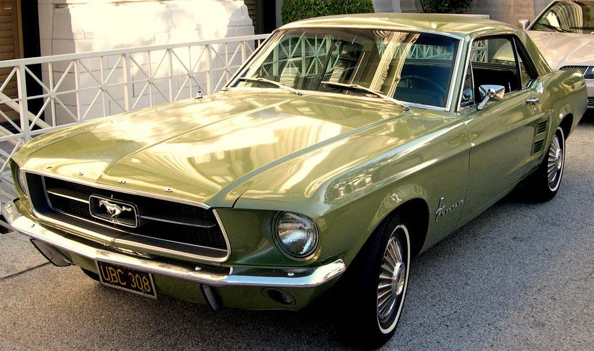
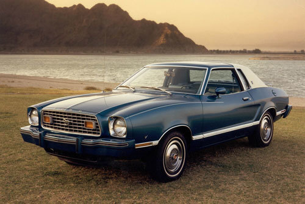
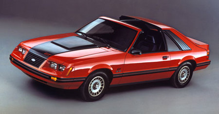
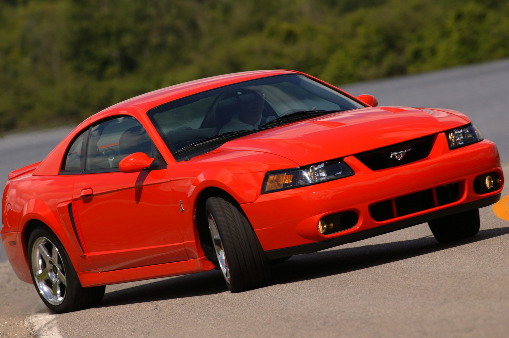
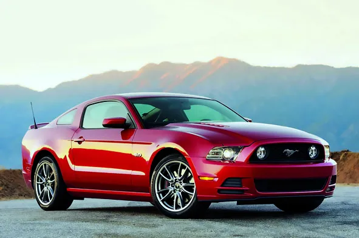
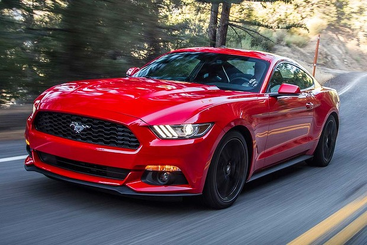

Primera Generación (1964–1973)
El nacimiento del mito y los icónicos Fastback.
No fue solo el lanzamiento de un auto; fue el inicio de una obsesión cultural. El 17 de abril de 1964, Ford presentó al mundo un concepto que nadie sabía que necesitaba hasta que lo vio: el Pony Car. Compacto, asequible y salvajemente atractivo, el Mustang de primera generación rompió todos los esquemas de ventas, entregando más de un millón de unidades en apenas 18 meses. Con su icónico capó infinito, su trasera corta y el emblema del caballo galopando hacia la izquierda —en dirección opuesta a los purasangre de las carreras—, el Mustang original se convirtió en el símbolo de la libertad para una nueva generación. No importaba si era un paseo por la costa o una carrera en el semáforo; conducir un Mustang del 64 era decirle al mundo que las reglas habían cambiado para siempre.

Segunda Generación (1974–1978)
El Mustang II, más compacto y eficiente tras la crisis del petróleo.
En 1974, el mundo cambió y el Mustang tuvo que cambiar con él. Ante una crisis de combustible que amenazaba con extinguir a los gigantes del asfalto, nació el Mustang II. Más pequeño, más ligero y más eficiente, fue el auto exacto para el momento equivocado. Aunque los puristas extrañaban el tamaño de antaño, el público respondió con un éxito rotundo: fue nombrado "Auto del Año" y vendió más de un millón de unidades. Esta generación demostró que el Mustang no era solo una cara bonita con un motor grande; era una entidad capaz de evolucionar. Con el regreso del motor V8 en 1975 y ediciones memorables como el Cobra II y el King Cobra, el Mustang II mantuvo encendida la llama de la leyenda durante los años más oscuros del automovilismo americano. Sin él, la historia del caballo salvaje se habría detenido para siempre..

Tercera Generación (1979–1993)
La era de la plataforma Fox Body, con un diseño más cuadrado y aerodinámico.
En 1979, el Mustang dejó atrás las curvas cromadas para adoptar una estética afilada, europea y radicalmente moderna: nacía la plataforma Fox Body. Fue la generación más longeva y la que convirtió al Mustang en un icono de la cultura callejera. Con un diseño ligero y una estructura versátil, este modelo no solo dominó las carreteras, sino que se convirtió en el lienzo favorito de los preparadores de motores. El regreso del icónico emblema 5.0 en los años 80 devolvió la confianza a los amantes de la velocidad, ofreciendo una aceleración que humillaba a deportivos mucho más caros. La tercera generación no solo salvó la identidad de alto rendimiento del Mustang; la democratizó, demostrando que un diseño funcional y aerodinámico podía ser tan emocionante como cualquier clásico de los 60.

Cuarta Generación (1994–2004)
El regreso a las curvas con el diseño SN95 y el borde afilado del New Edge.
En 1994, para celebrar su 30.º aniversario, el Mustang experimentó su transformación más profunda en décadas. La cuarta generación abandonó la rigidez de los años 80 para abrazar un diseño fluido y musculoso que rendía homenaje al modelo original de 1964. Con tomas de aire laterales y el regreso del caballo galopante a la parrilla, el Mustang volvía a verse como un depredador. Esta era se dividió en dos momentos icónicos: el diseño inicial de líneas suaves y la evolución "New Edge" de 1999, que añadió ángulos afilados y una presencia mucho más agresiva. Fue la generación que vio nacer al legendario Cobra R y que consolidó el motor modular V8, demostrando que el Mustang podía ser un auto refinado para el día a día y un monstruo en la pista de cuarto de milla.

Quinta Generación (2005–2014)
El estilo Retro-futurista que revivió la estética de los años 60.
En 2005, el Mustang hizo algo audaz: dejó de intentar encajar en la modernidad para volver a ser él mismo. La quinta generación, conocida como la plataforma S197, rescató las líneas inmortales del modelo de 1967 —los faros redondos, la caída fastback y la mirada desafiante— para fusionarlas con la potencia del siglo XXI. No era solo un coche nuevo; era una máquina del tiempo que te permitía conducir la nostalgia a 200 km/h. Esta fue la era donde las leyendas cobraron vida propia. Vimos el regreso triunfal de Shelby con el imponente GT500, un monstruo que recordaba que el veneno de la cobra seguía siendo letal. Fue la generación que devolvió el orgullo a las calles, demostrando que un diseño icónico nunca muere, solo espera el momento justo para volver a rugir y reclamar su trono como el rey de los Muscle Cars.

Sexta Generación (2015–2023)
La globalización del Mustang, introduciendo suspensión trasera independiente.
En su 50.º aniversario, el Mustang decidió que el mundo era demasiado pequeño. La sexta generación rompió las cadenas del pasado al introducir, por primera vez de forma masiva, la suspensión trasera independiente. Este cambio transformó al salvaje caballo de línea recta en un atleta de precisión capaz de devorar curvas con una agilidad nunca antes vista. El Mustang dejó de ser un secreto americano para convertirse en el deportivo más vendido del planeta. Bajo su capó más bajo y aerodinámico, el motor V8 Coyote alcanzó su madurez, entregando una sinfonía de potencia que se sentía tan cómoda en el Nürburgring como en un semáforo de California. Con el renacimiento de variantes legendarias como el Mach 1 y el todopoderoso Shelby GT500 de 760 caballos, la sexta generación demostró que se puede ser una bestia sofisticada sin perder un solo gramo de esa actitud rebelde que define a un Mustang.

Séptima Generación (2024–Presente)
El actual S650, que integra cabinas digitales y el motor Coyote de 4.ª generación.
En un mundo que camina hacia el silencio, la séptima generación del Mustang se levanta como el defensor final del rugido auténtico. El S650 no es solo un auto; es un refugio tecnológico para los amantes de la velocidad pura. Con una cabina inspirada en los aviones de combate, equipada con pantallas inmersivas y software de alto rendimiento, este modelo traslada la experiencia de conducción del asfalto al futuro digital sin sacrificar ni un ápice de su instinto salvaje. Esta generación lleva el motor V8 Coyote de 4.ª generación a niveles nunca antes vistos, introduciendo la joya de la corona: el Mustang Dark Horse. Con una estética siniestra y una ingeniería diseñada para el circuito, el Dark Horse es la prueba de que el Mustang no está listo para retirarse; está listo para evolucionar. Es el equilibrio perfecto entre la precisión de un algoritmo y la furia de un motor de 5.0 litros, asegurando que el galope del caballo salvaje siga resonando en la era de la inteligencia artificial.